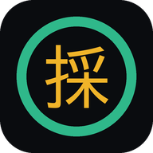

報酬と距離を入れると、受ける目安を超えているか一目で分かります。 下の欄は本物です。直前に来た案件の数字を入れてみてください。
案件画面を撮って読ませると、店名・報酬・距離・配達先を拾って判定します。数字を打つ必要はありません。
「この店は平均12分待つ」「このエリアは配達後4分で次が鳴る」。過去の自分の記録から出します。
店に到着、受取完了、配達先に到着、受渡完了。相乗せ（PPDD）もそのまま。1分ごとに経過を音で知らせます。
商品代金を入れると、出されそうな金額とお釣りが一覧で出ます。硬貨の内訳つき。
公式の報酬画面を撮ると記録と突き合わせ、差額が出ます。オンライン時間から待機込みの本当の時給も分かります。
案件・報酬明細・サマリー・ナビ・クエスト・レシート。種類はアプリが見分けて、それぞれの場所に記録します。20枚まとめてでも。
押した音が変わります。店待ちが長引くと警告音。どの画面にいても計測中のバーが出ます。
昼モードで白背景の高コントラストに。グローブ用の巨大ボタンも。
Uberやマップに切り替えても、入力途中の内容と計測は残ります。アプリが落ちても続きから。
全国共通のデータではなく、自分が走って貯めた記録から判定します。同じ店でも、人によって待たされる時間は違うので。
店ごとのメモも残せます。「駐輪は建物の裏」「エレベーターが遅い」。写真やマップのスクショも貼れます。
商品代金 1,562円のとき、こう出ます。
| 1,600円 | 38円 |
| 2,000円 | 438円 |
| 2,062円 | 500円 |
| 2,562円 | 1,000円 |
| 5,062円 | 3,500円 |
硬貨の内訳も出るので、財布から数えずに出せます。受け取った金額を打てば、その場でお釣りが出ます。